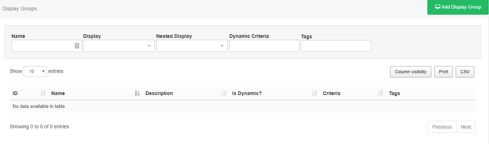
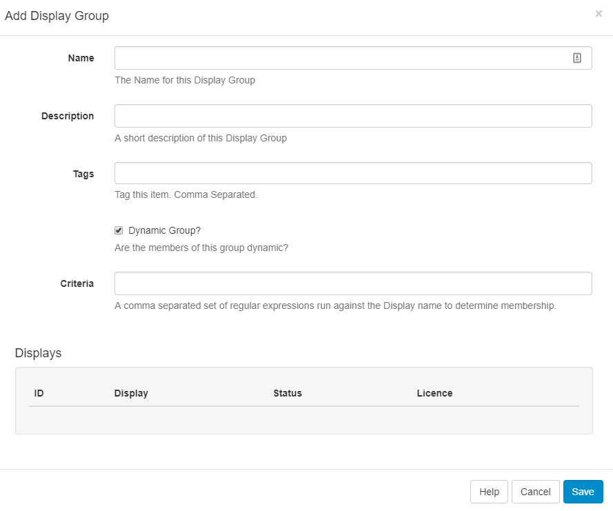
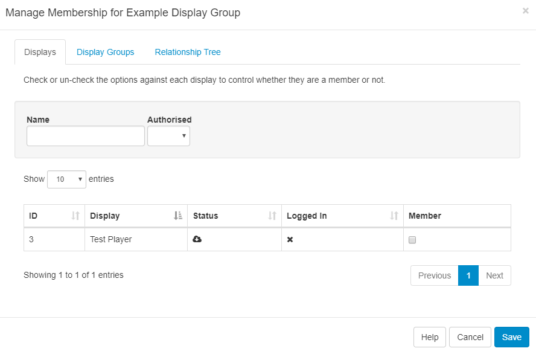
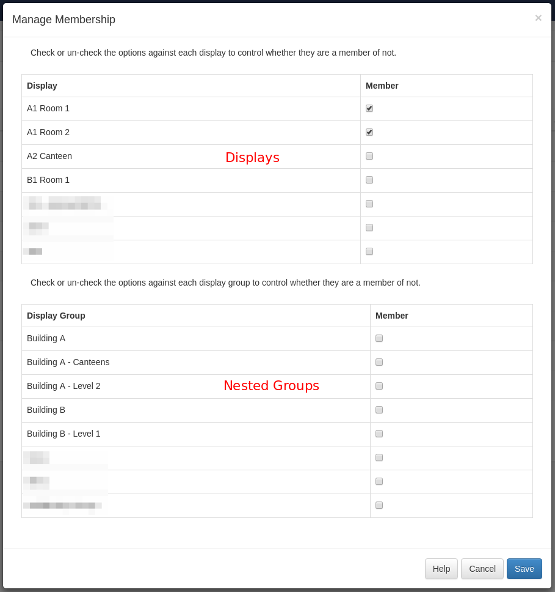

Display Groups
For ease of Scheduling and Media Assignment create Display Groups and assign Displays to one or multiple Display Groups.
Display Groups are administered in the CMS by clicking on Display Settings under the Displays section on the Menu. The Display Group grid will open to Add and manage Display Groups.

Add/Edit
Click on the Add Display Group button to create a new Display Group or use the row menu to Edit an existing Display Group.

Members
The membership of a Display Group is either a Manual Assignment or controlled by filter criteria using Dynamic Groups.
Dynamic Groups
When ticked an additional field will appear to allow for entry of one or more regular expressions to use to select which Displays belong to that Display Group.
Filter criteria for Dynamic Groups is in the format of regular expressions, but can also be simple string comparisons. The expressions should be separated by a comma and can be negated with a - prefix.
For example, all Displays containing "a" but not "b" would be
a,-b.

Manual Assignment
Use the row menu for the selected Display Group and click on Members. Tick/untick Displays or Nested Groups to add/remove membership from the Display Group.

The form shows Displays and Display Groups for nesting as well as a Relationship Tree making it easier to see the relationships of Displays.
Nested Groups
Display Groups can be nested to create complex structures and allow for targeted Scheduling.
Example Group Structure
- Site 1
- Site 1 - Building A
- Site 1 - Building A - Level 1
- Site 1 - Building A - Level 2
- Site 1 - Building B
The Display membership is set on the lowest level Groups and those groups then belong to the next level up, which in turn belong to the highest level parent "Site 1". The CMS will not allow a circular reference to be created - this is an assignment that creates a loop (i.e. Site 1 has Site 1 - Building A, and Site 1 - Building A has Site 1.)

Schedules, Media and Layout Assignments applied to the Display Group will apply to all its members and will appear for selection when Scheduling.